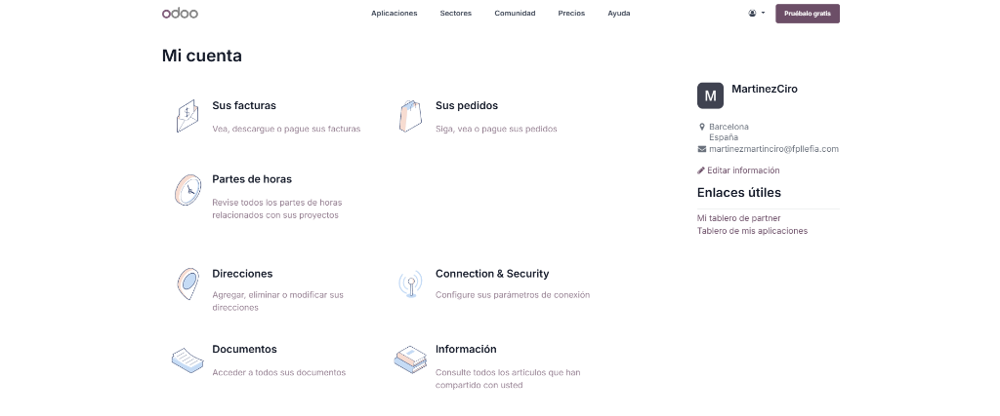
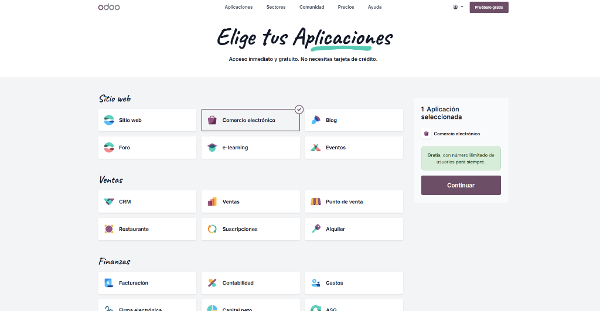
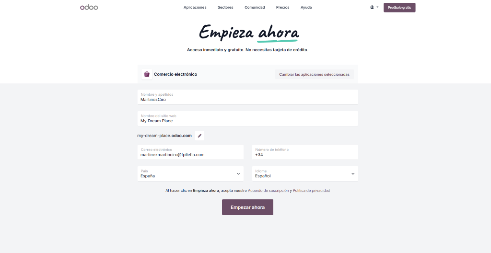
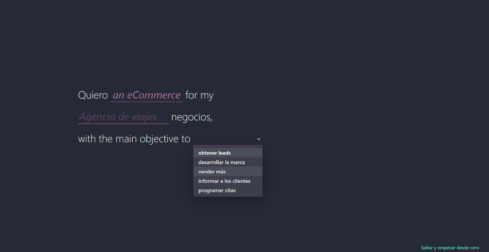
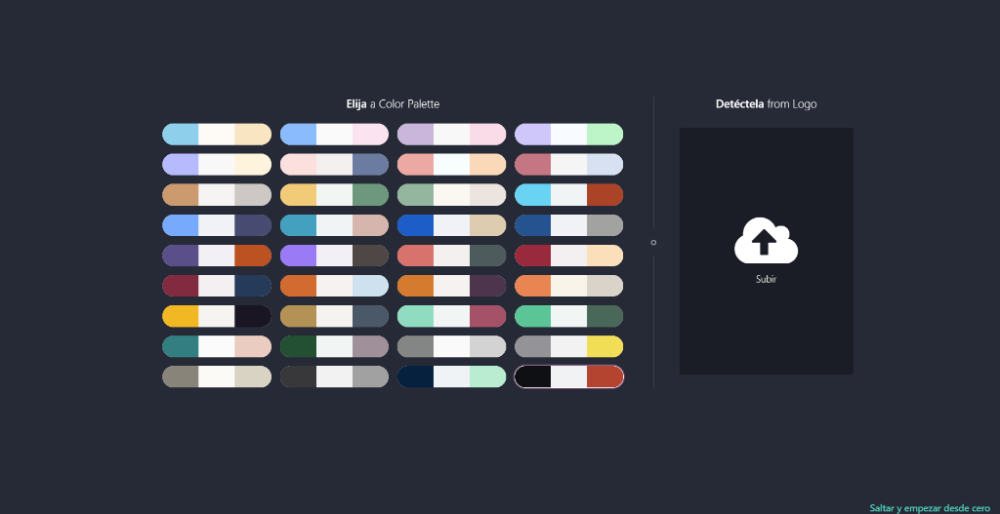
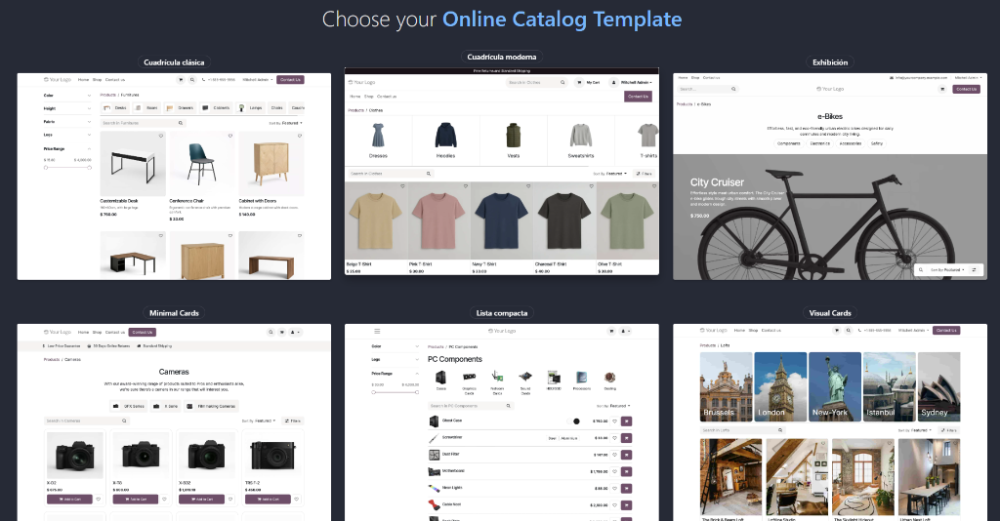
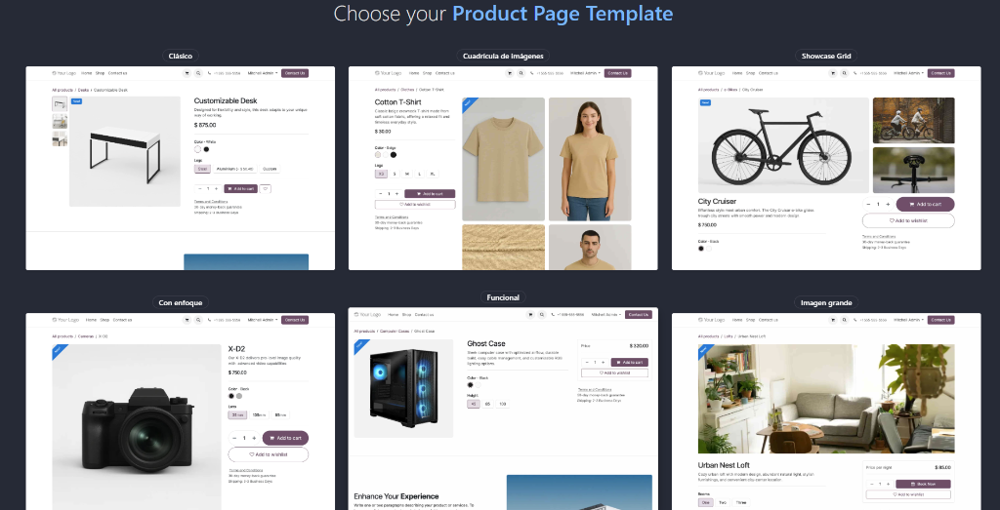
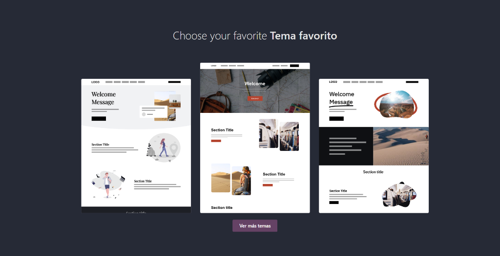

Documentació de l'ERP amb Odoo
Configuració i posada en marxa per a l'agència de viatges i allotjaments My Dream Place (basat en el Projecte 2).
Objectiu del Projecte
Aquest projecte consisteix en la creació d'un compte a Odoo per muntar i simular la gestió empresarial d'una agència de viatges inspirada en My Dream Place. Es configuraran mòduls clau com CRM, Vendes, Facturació, Contactes, entre d'altres, introduint dades de prova per provar el flux complet de treball. Aquesta SPA documenta pas a pas la configuració inicial realitzada fins al moment.
Creació del Compte d'Odoo
Primer pas per al muntatge del programari de gestió empresarial. S'ha realitzat el registre a la plataforma oficial d'Odoo, creant el perfil d'usuari personal amb accés a la consola d'administració (Partner Portal).

martinezmartinciro@fpllefia.com
Selecció d'Aplicacions
Selecció del primer mòdul d'entrada. Triem l'aplicació de Comercio electrónico (eCommerce) per començar, la qual ens permetrà configurar l'agència de viatges per a la venda de paquets i reserves en línia de forma directa.

Nota: Odoo permet arrencar de forma completament gratuïta si se selecciona una sola aplicació inicial. Més endavant podrem activar i interconnectar la resta de mòduls requerits com CRM, Vendes, Contactes i Facturació.
Registre i Configuració de l'Empresa
Introducció de les dades bàsiques de la nostra empresa de viatges. S'assigna el nom del projecte i es crea el subdomini d'accés a Odoo per a la nostra agència de reserves.

my-dream-place.odoo.com
Definició de l'Objectiu de Negoci
Completant l'assistent interactiu d'arrencada d'Odoo. Seleccionem el sector adequat (Agencia de viajes) i definim que el nostre objectiu principal és la venda directa online (vender más).

Aquesta elecció ajuda a Odoo a carregar un formulari d'incorporació especialitzat amb categories de productes per a viatges, allotjaments i activitats.
Selecció del Disseny i Paleta de Colors
Darrer pas de l'assistent d'inicialització. Triem una paleta de colors que s'ajusti a l'estètica elegant i professional de la nostra agència de viatges. També s'ofereix la possibilitat de pujar el nostre logo per extreure els tons de marca directament.

Següent fase: Un cop seleccionat el disseny bàsic, Odoo generarà l'estructura inicial de la base de dades de l'ERP i del lloc web eCommerce per començar a introduir els nostres paquets turístics.
Plantilla del Catàleg Online
Configuració de l'estructura de visualització de productes. Odoo ofereix diferents plantilles per al llistat de productes (Cuadrícula clásica, Cuadrícula moderna, Exhibición, Minimal Cards, Lista compacta, Visual Cards). Seleccionem el format visual per mostrar els nostres packs de viatge i allotjaments d'una manera intuïtiva.

Nota de disseny: La plantilla "Visual Cards" o "Exhibición" és ideal per a agències de viatges, ja que prioritza les fotografies a gran resolució dels destins turístics.
Plantilla de Detall del Producte
Definició del disseny de la fitxa detallada de cada producte. Triem la distribució de la informació (Clásico, Cuadrícula de imágenes, Showcase Grid, Con enfoque, Funcional, Imagen grande), de manera que determinem com es veuran les fotos, preus, botó de reserva i especificacions del viatge.

Per a un lloc web de viatges, la plantilla "Imagen grande" o "Cuadrícula de imágenes" permet que l'usuari s'involucri emocionalment amb les imatges del destí/hotel abans d'iniciar el flux de reserva.
Selecció del Tema Favorit i Portada
Elecció final de la maquetació de la pàgina de benvinguda (Landing Page). Escollim el tema preconfigurat per Odoo que millor s'adapta a la imatge corporativa de My Dream Place, per tal de procedir amb la instal·lació i creació final del lloc de reserves.
